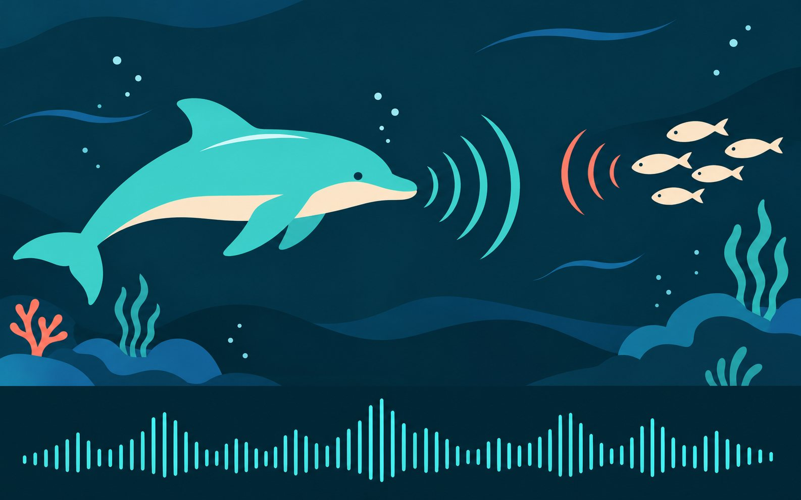

Que voit un dauphin quand il n'y a plus de lumière ?
- Ils font
- Ils reconnaissent des sons enregistrés sous l'eau, lisent des spectrogrammes, jouent à l'écholocation yeux bandés. Puis on allume un moteur.
- Ils découvrent sans s'en rendre compte
- Que sous l'eau le son va loin et vite, et ce que le bruit des bateaux brouille.